Part19 ggplot2 package
Graphing package inspired by the Grammar of Graphics work of Leland Wilkinson.
A tool that enables to concisely describe the components of a graphic.
- Why ggplot2 ?
- Flexible
- Customizable
- Pretty !
- Well documented
- We will see:
- Scatter plots
- Box plots
- Dot plots
- Bar plots
- Histograms
- How to save plots
- Volcano plots
19.1 Getting started
- All ggplots start with a base layer created with the ggplot() function:
The base layer is setting the grounds but NOT plotting anything
- Add a layer (with the + sign) that describes what kind of plot you want.
19.2 Scatter plot
# Example of a scatter plot: add the geom_point() layer
ggplot(data=dataframe, mapping=aes(x=column1, y=column2)) + geom_point()- Example of a simple scatter plot:
# Create a data frame
df1 <- data.frame(sample1=rnorm(200), sample2=rnorm(200))
# Plot !
ggplot(data= df1 , mapping=aes(x=sample1, y=sample2)) +
geom_point()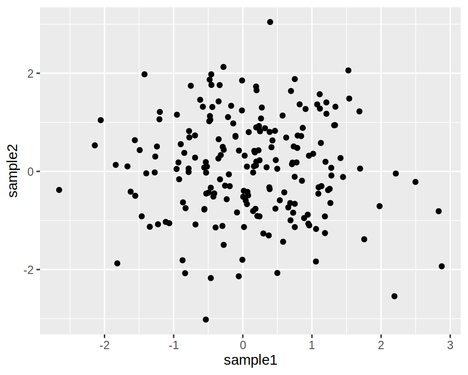
- Add layers to that object to customize the plot:
- ggtitle to add a title
- geom_vline to add a vertical line
- etc.
ggplot(data= df1 , mapping=aes(x=sample1, y=sample2)) +
geom_point() +
ggtitle(label="my first ggplot") +
geom_vline(xintercept=0)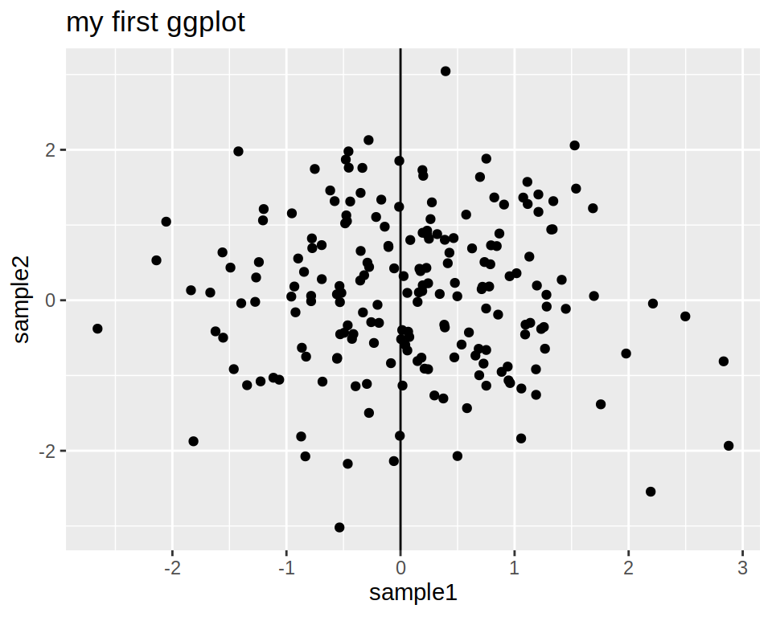
Bookmark that ggplot2 reference and that good cheatsheet for some of the ggplot2 options.
- You can save the plot in an object at any time and add layers to that object:
# Save in an object
p <- ggplot(data= df1 , mapping=aes(x=sample1, y=sample2)) +
geom_point()
# Add layers to that object
p + ggtitle(label="my first ggplot")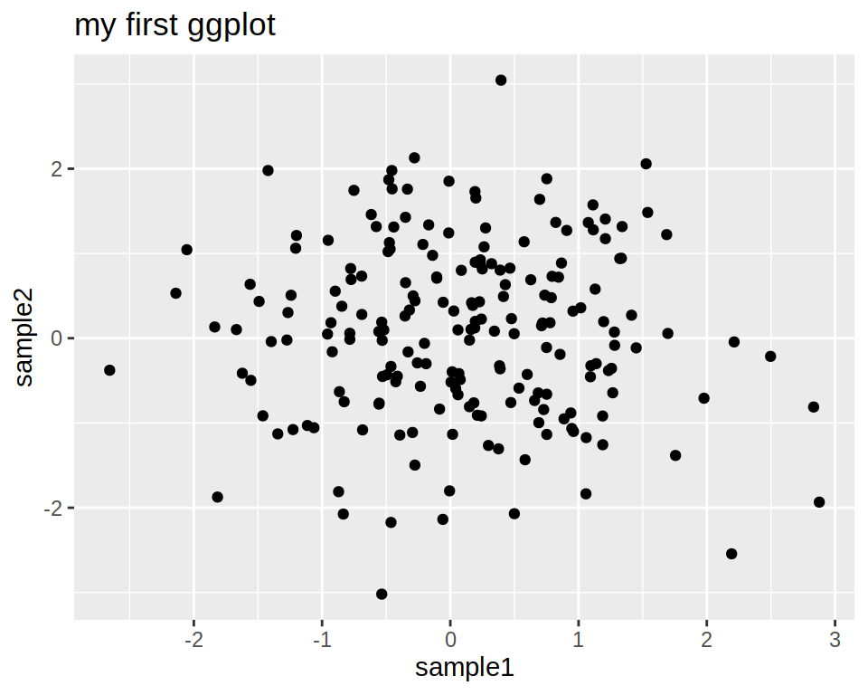
- What is inside the aes (aesthetics)function ?
- Anything that varies according to your data !
- Columns with values to be plotted.
- Columns with which you want to, for example, color the points.
- Anything that varies according to your data !
Color all points in red (not depending on the data):
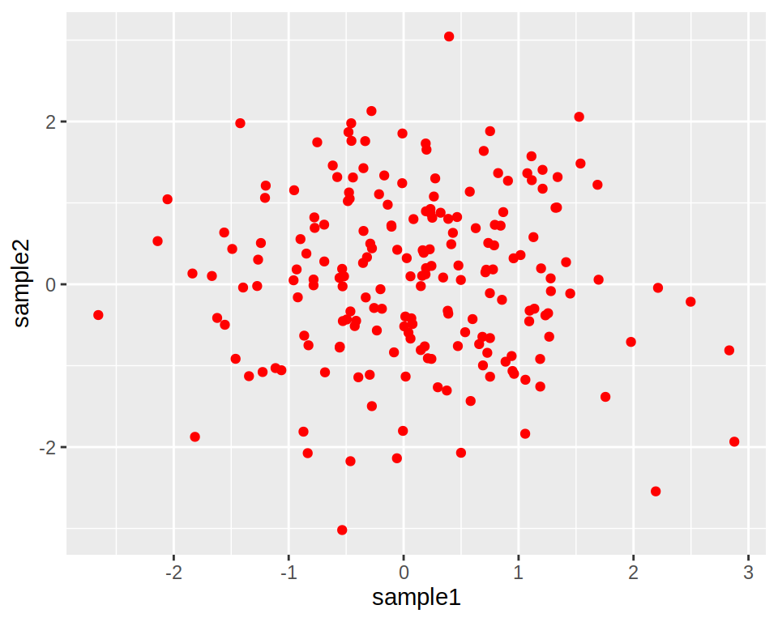
Color the points according to another column in the data frame:
19.3 Box plots
- Simple boxplot showing the data distribution of sample 1:
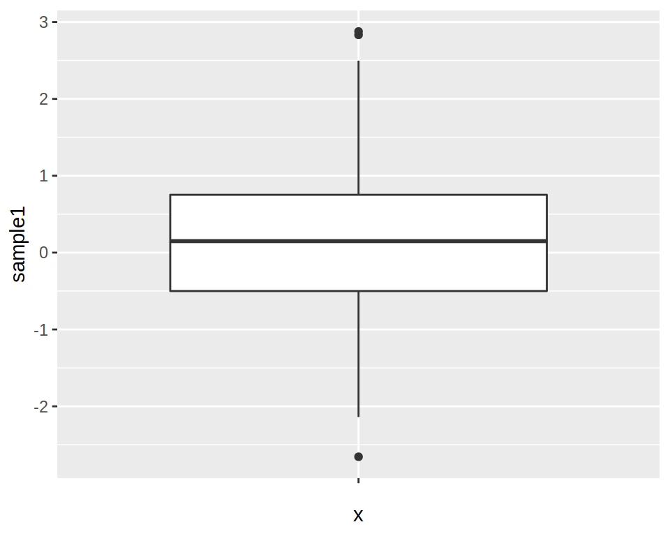
- Split the data into 2 boxes:
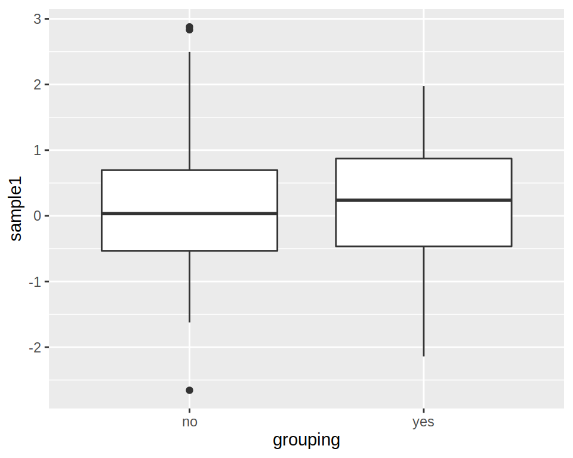
- What if you want to plot both sample1 and sample2 ?
You need to convert into a long format
Plotting both sample1 and sample2:
# load package
library("reshape2")
# convert to long format
df_long <- melt(data=df2)
# all numeric values are organized into only one column: value
# plot:
ggplot(data=df_long, mapping=aes(x=variable, y=value)) +
geom_boxplot()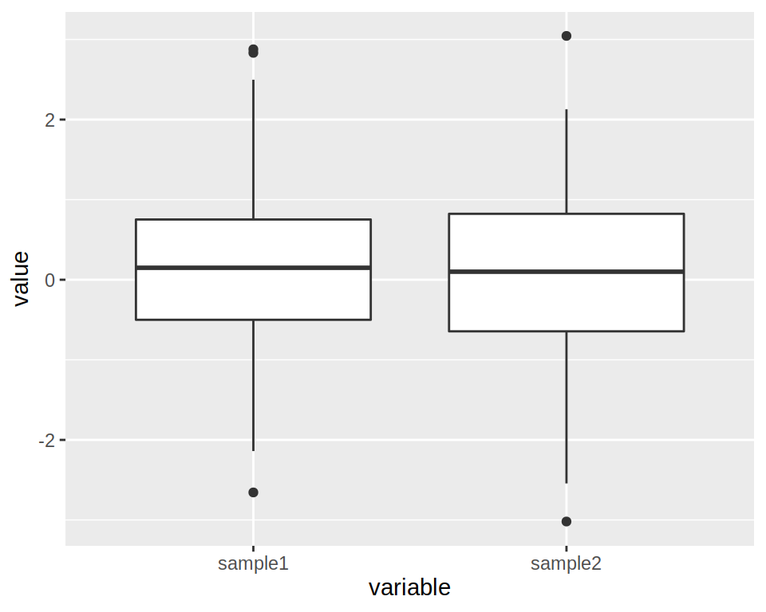
- What if now you also want to see the distribution of “yes” and “no” in both sample1 and sample2 ?
Integrate a parameter to the aes()
# Either color (color of the box border)
ggplot(data=df_long, mapping=aes(x=variable, y=value, color=grouping)) +
geom_boxplot()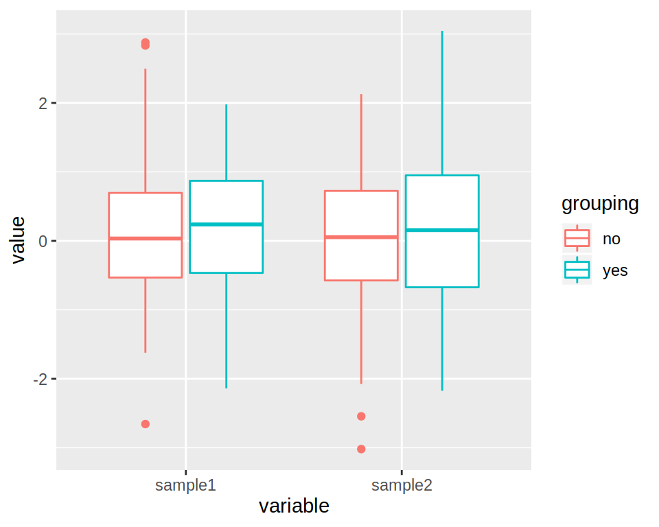
# Or fill (color inside the box)
ggplot(data=df_long, mapping=aes(x=variable, y=value, fill=grouping)) +
geom_boxplot()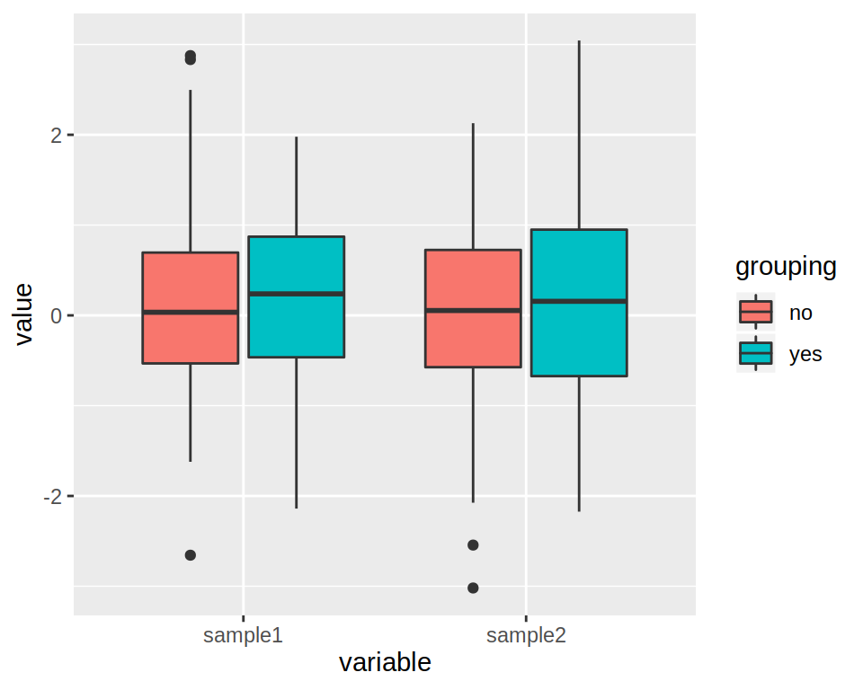
Do you want to change the default colors?
* Integrate either layer:
* scale_color_manual()
* scale_fill_manual
19.4 Dot plots
Example of the expression of a gene in 6 samples: 2 experimental groups in triplicates.
# create a named vector with the expression of a gene
mygene <- c(8.1, 8.2, 8.6, 8.7, 9.4, 8.5)
# the names of each element of the vector are sample names
names(mygene) <- c("KO1", "KO2", "KO3", "WT1", "WT2", "WT3")
# transform to long format
mygenelong <- melt(data=mygene)
# add new columns containing sample names and experimental groups
mygenelong$sample_name <- rownames(mygenelong)
mygenelong$group <- gsub("[1-3]{1}", "", mygenelong$sample_name)
# dot plot
# add labels with "label" in the aes() and layer geom_text()
# nudge_x adjust the labels horizontally
pdot <- ggplot(data=mygenelong, mapping=aes(x=group, y=value, col=group, label=sample_name)) +
geom_point() +
geom_text(nudge_x=0.2)- Add more layers:
- xlab() to change the x axis label
- ylab() to change the y axis label
- theme to manage the legend
pdot + xlab(label="Experimental group") +
ylab(label="Normalized expression (log2)") +
ggtitle(label="Expression of gene 1") +
theme_bw() +
theme(legend.position="none")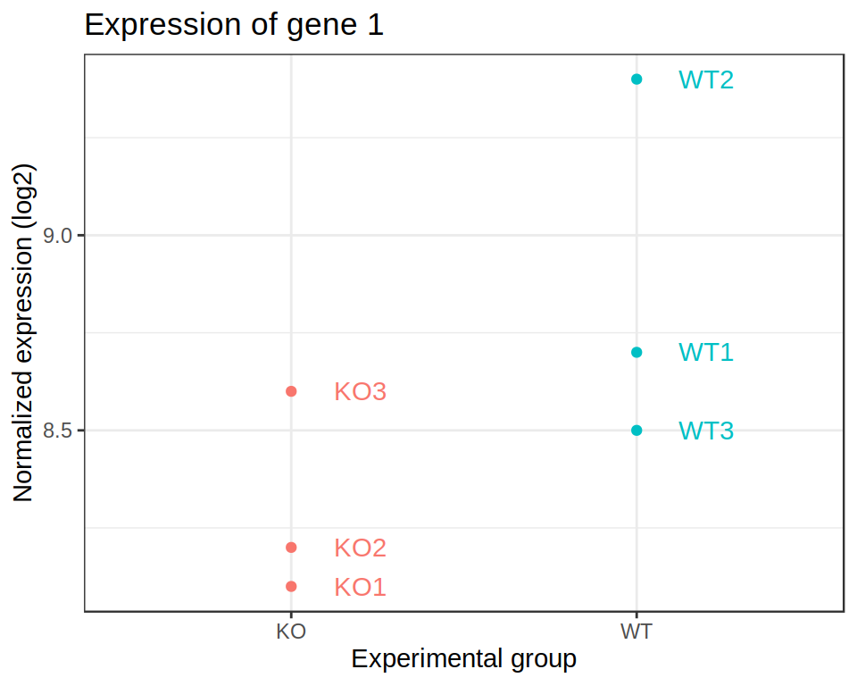
19.5 Bar plots
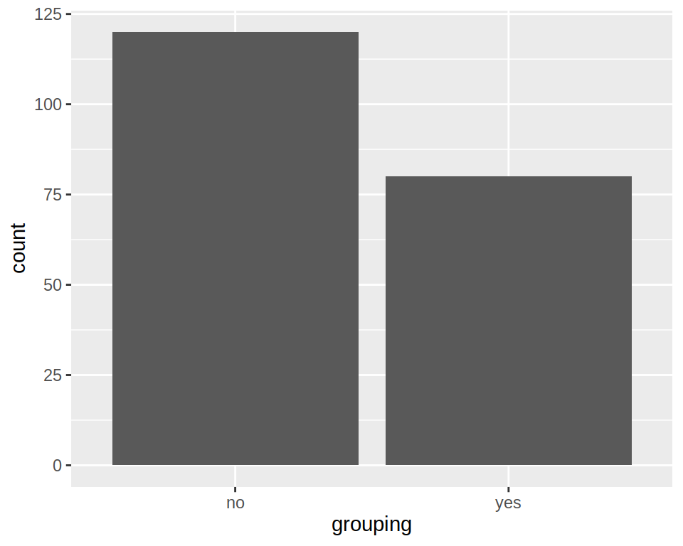
- Customize:
- scale_x_discrete is used to handle x-axis title and labels
- coord_flip swaps the x and y axis
# Save the plot in the object "p"
pbar <- ggplot(data=df2, mapping=aes(x=grouping, fill=grouping)) +
geom_bar()
# Change x axis label with scale_x_discrete and change order of the bars:
p2 <- pbar + scale_x_discrete(name="counts of yes / no", limits=c("yes", "no"))
# Swapping x and y axis with coord_flip():
p3 <- p2 + coord_flip()
# Change fill
p4 <- p3 + scale_fill_manual(values=c("yellow", "cyan"))
# Show intermediary and final plots
pbar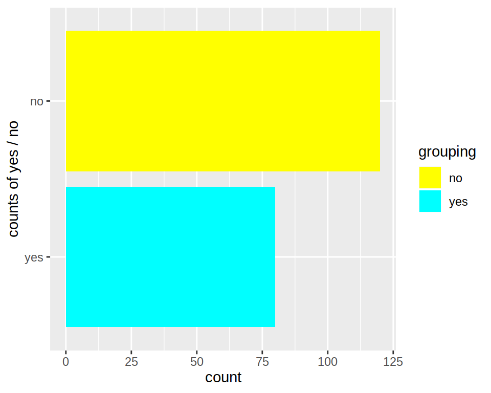
19.6 Histograms
Simple histogram on one sample (using the df2 data frame):
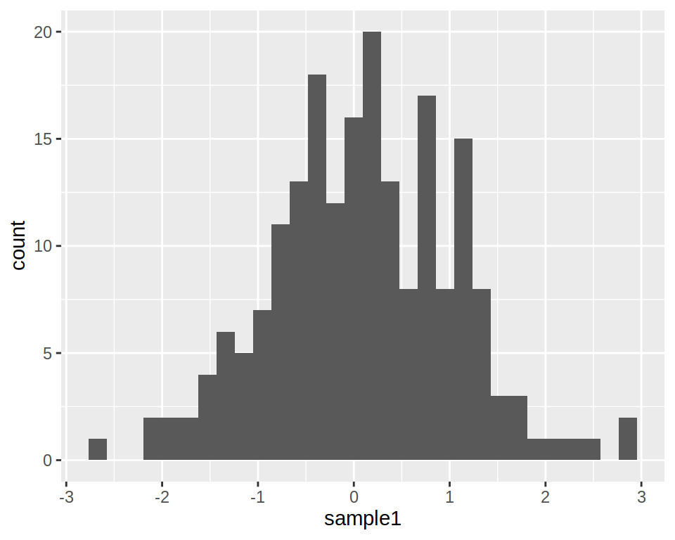
Histogram on more samples (using df_long):

Split the data per sample (“variable” column that represents here the samples):
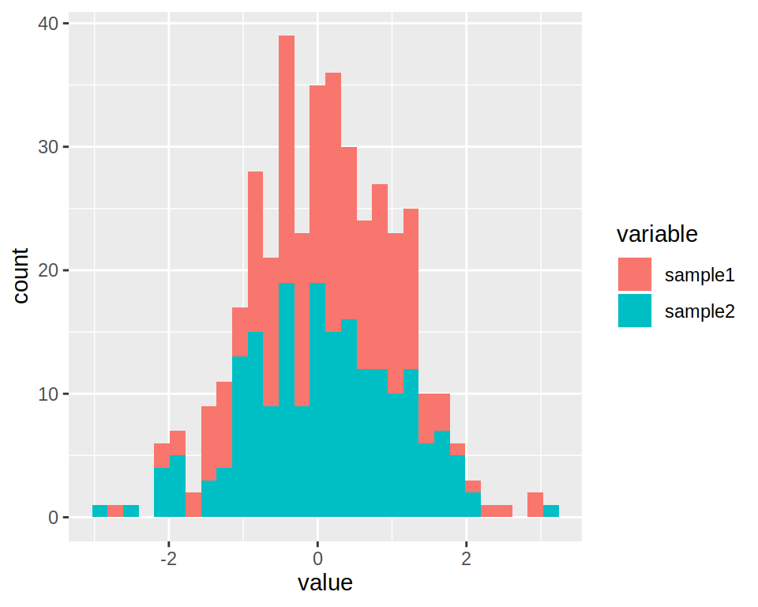
By default, the histograms are stacked: change to position dodge (side by side):
19.7 About themes
You can change the default global theme (background color, grid lines etc. all non-data display):
# go back to a previous plot
p <- ggplot(data=df_long, mapping=aes(x=value)) + geom_histogram()
# Try different themes
p + theme_bw()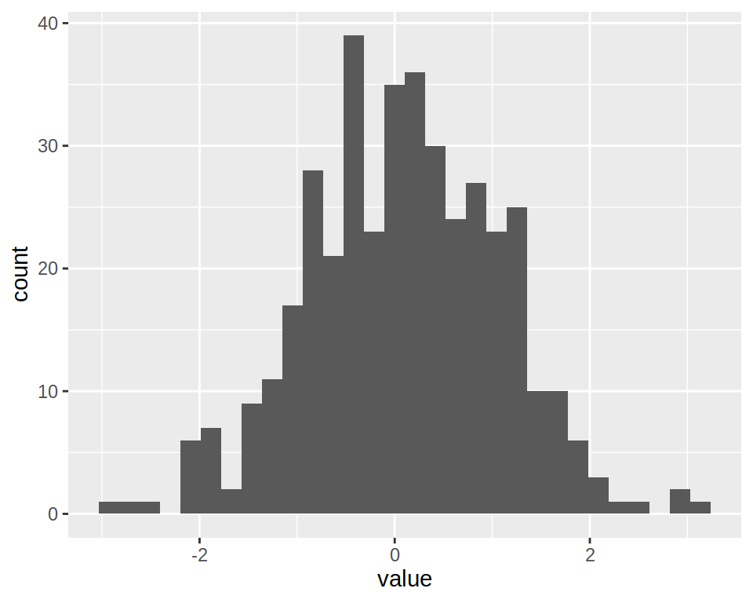
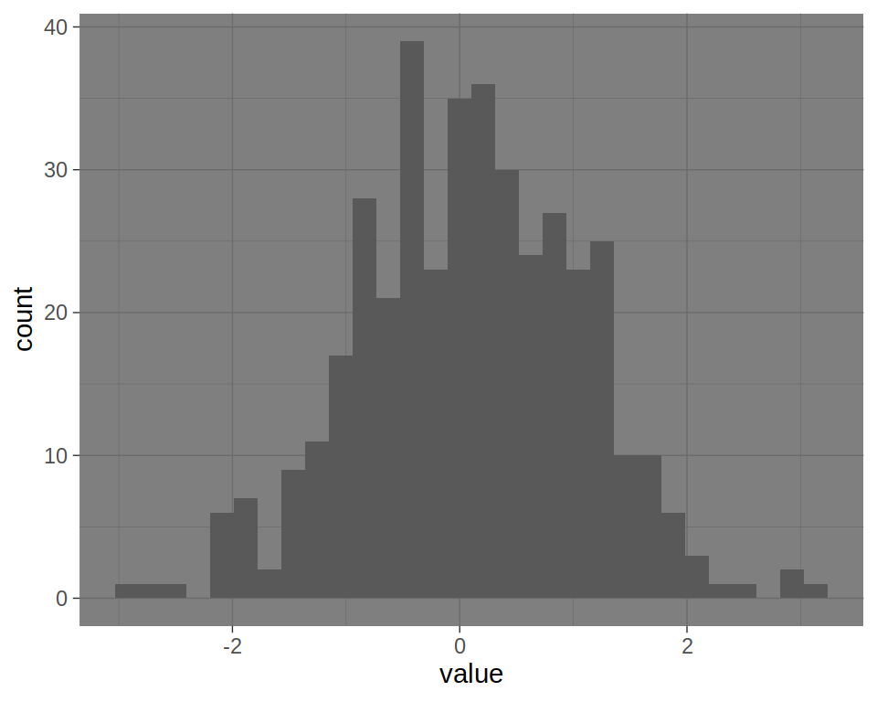
19.8 Saving plots in files
- The same as for regular plots applies:
- You can also use the ggplot2 ggsave function:
# By default, save the last plot that was produced
ggsave(filename="lastplot.png")
# You can pick which plot you want to save:
ggsave(filename="myplot.png", plot=p)
# Many different formats are available:
# "eps", "ps", "tex", "pdf", "jpeg", "tiff", "png", "bmp", "svg", "wmf"
ggsave(filename="myplot.ps", plot=p, device="ps")
# Change the height and width (and their unit):
ggsave(filename="myplot.pdf",
width = 20,
height = 20,
units = "cm")- You can also organize several plots on one page
- One way is to use the gridExtra package:
- ncol, nrow: arrange plots in such number of columns and rows
# load package
library(gridExtra)
# 2 rows and 2 columns
grid.arrange(pscat, pbox, pbar, phist, nrow=2, ncol=2)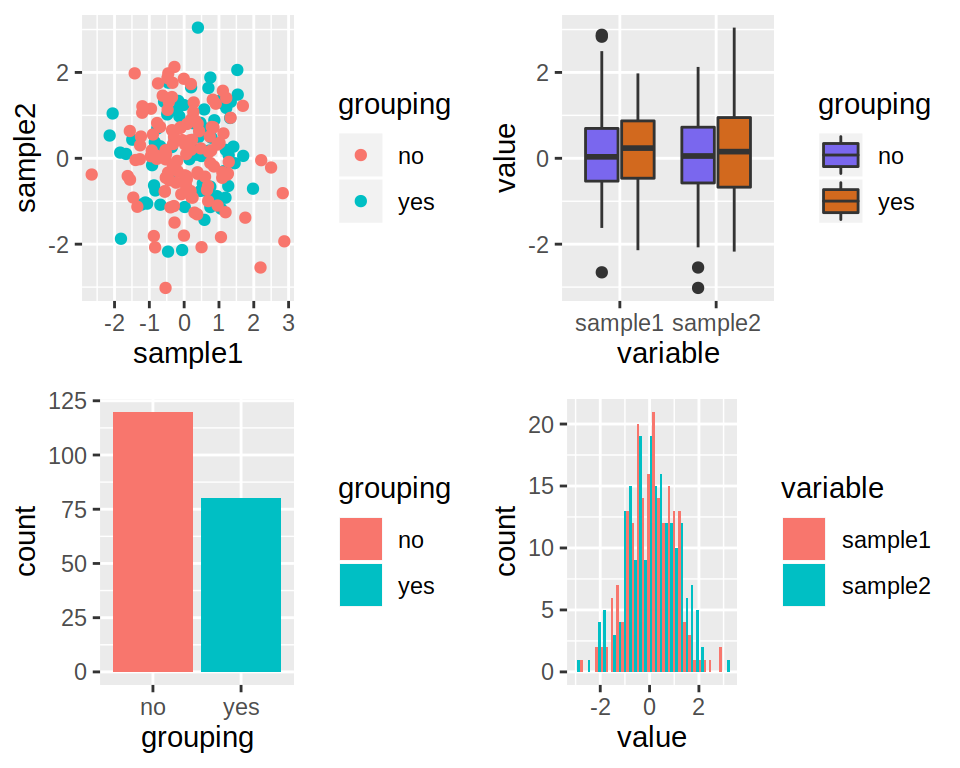
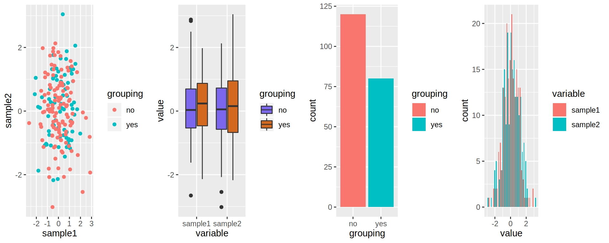
WARNING !!: ggsave and grid.arrange are not directly compatible. To save a file organized by grid.arrange, use the regular functions (pdf, png etc.)
19.9 Exercise 12: ggplot2
Create the script “exercise12.R” and save it to the “Rcourse/Module3” directory: you will save all the commands of exercise 12 in that script.
Remember you can comment the code using #.
correction
19.9.1 Exercise 12a- Scatter plot
1- Load ggplot2 package
correction
2- Download the data we will use for plotting:
3- Read file into object “project1”
About this file: * It is comma separated (csv format) * The first row is the header * Take the row names from the first column
correction
4- Using ggplot, create a simple scatter plot representing gene expression of “sampleB” on the x-axis and “sampleH” on the y-axis.
5- Create an extra column to the data frame “project1” (you can call this column “expr_limits”): if the expression of a gene is > 13 in both sampleB and sampleH, set to “high”; if the expression of a gene is < 6 in both sampleB and sampleH, set to “low”; if different, set to “normal”.
correction
# Initialize all values to "normal"
project1$expr_limits <- "normal"
# "high" if project1$sampleB > 13 and project1$sampleH > 13
project1$expr_limits[project1$sampleB > 13 & project1$sampleH > 13] <- "high"
# "low" if project1$sampleB < 6 and project1$sampleH < 6
project1$expr_limits[project1$sampleB < 6 & project1$sampleH < 6] <- "low"6- Color the points of your scatter plot according to the newly created column “expr_limits”. Save that plot in the object “p”
correction
7- Add a layer to “p” in order to change the points colors to blue (for low), grey (for normal) and red (for high). Save this plot in the object “p2”.
8- Save p2 in a jpeg file.
a. Try with RStudio Plots window (Export)
b. Try in the console:
19.9.2 Exercise 12b- Box plot
1- Convert “project1” from a wide format to a long format: save in the object “project_long” Note: remember melt function from reshape2 package.
2- Produce a boxplot of the expression of all samples (each sample should be represented by a box)
3- Modify the previous boxplot so as to obtain 3 “sub-boxplots”" per sample, each representing the expression of either “low”, “normal” or “high” genes.
correction
4- Rotate the x-axis labels (90 degrees angle).
This is new ! Google it !!
correction
ggplot(data=project_long, mapping=aes(x=variable, y=value, color=expr_limits)) +
geom_boxplot() +
theme(axis.text.x = element_text(angle = 90))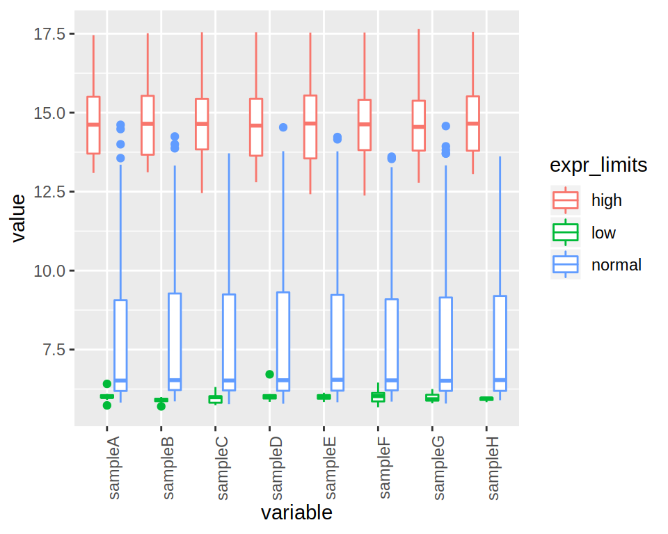
5- Finally, add a title to the plot.
19.9.3 Exercise 12c- Bar plot
1- Produce a bar plot of how many low/normal/high genes are in the column “expr_limits” of “project1”.
2- Add an horizontal line at counts 250 (y-axis). Save the plot in the object “bar”
correction
3- Swap the x and y axis. Save in bar2.
correction
4- Save “bar” and “bar2” plots in a “png” file, using the png()** function: use grid.arrange (from the gridExtra package) to organize both plots in one page !**
correction
## png
## 219.9.4 Exercise 12d- Histogram
1- Create a simple histogram using project_long (column “value”).
2- Notice that you get the following warning message" stat_bin() using bins = 30. Pick better value with binwidth.
Set “bins”" parameter of geom_histogram() to 50.
3- This histogram plots expression values for All samples.
Change the plot so as to obtain one histograms per sample.
4- By default, geom_histogram produces a stacked histogram.
Change the “position” argument to “dodge”.
correction
5- A bit messy ?? Run the following:
hist2 <- ggplot(data=project_long, mapping=aes(x=value, fill=variable)) +
geom_histogram(bins=50) +
facet_grid(~variable)facet_grid() is another easy way to split the views!
6- Change the default colors with scale_fill_manual().
You can try the rainbow() function for coloring.
7- Zoom in the plots: set the x-axis limits from from 6 to 13.
Add the xlim() layer.
correction
8- Change the default theme to theme_minimal()
correction
9- Save that last plot to a file (format of your choice) with ggsave()
19.10 More about the theme() function
The theme() allows a precise control of graphical parameters such as axis text, ticks and labels, or legend texts and labels, etc.
More details here
# Let's the project_long object from exercise 12, and plot boxplots
boxp <- ggplot(data=project_long, aes(x=variable, y=value, color=expr_limits)) +
geom_boxplot()
# Remove the legend title:
boxp + theme(legend.title=element_blank())# Change font of legend text
boxp + theme(legend.title=element_blank(),
legend.text = element_text(colour="red", size = 8, face = "bold"))# Put legend on the top of the plot
boxp + theme(legend.title=element_blank(),
legend.text = element_text(colour="red", size = 8, face = "bold"),
legend.position="top")# Rotate x-axis labels
boxp + theme(legend.title=element_blank(),
legend.text = element_text(colour="red", size = 8, face = "bold"),
legend.position="top",
axis.text.x = element_text(angle = 90))# Add a color to the plot's background
boxp + theme(legend.title=element_blank(),
legend.text = element_text(colour="red", size = 8, face = "bold"),
legend.position="top",
axis.text.x = element_text(angle = 90),
plot.background = element_rect(fill = "yellow"))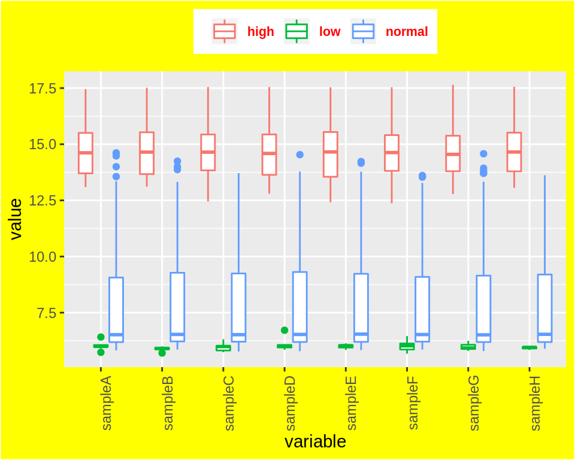
19.11 Volcano plots
A volcano plot is a type of scatter plot represents differential expression of features (genes for example): on the x-axis we typically find the fold change and on the y-axis the p-value.
# Download the data we will use for plotting
download.file("https://raw.githubusercontent.com/sarahbonnin/CRG_RIntroduction/master/de_df_for_volcano.rds", "de_df_for_volcano.rds", method="curl")
# The RDS format is used to save a single R object to a file, and to restore it.
# Extract that object in the current session:
tmp <- readRDS("de_df_for_volcano.rds")
# remove rows that contain NA values
de <- tmp[complete.cases(tmp), ]# The basic scatter plot: x is "log2FoldChange", y is "pvalue"
ggplot(data=de, aes(x=log2FoldChange, y=pvalue)) + geom_point()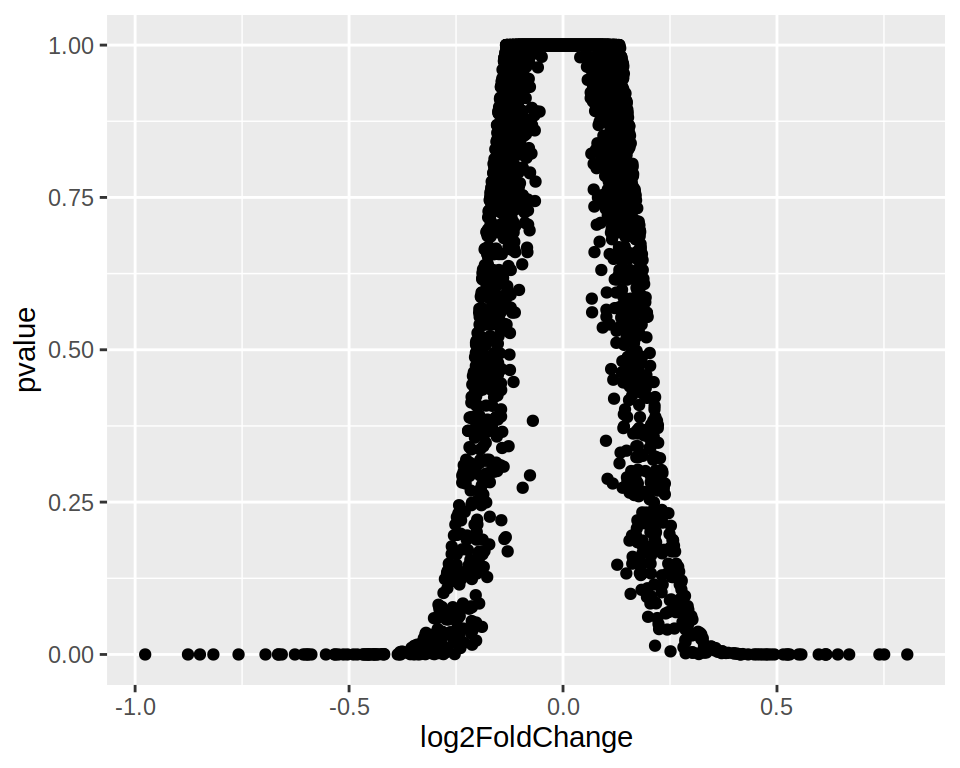
Doesn’t look quite like a Volcano plot…
Convert the p-value into a -log10(p-value)
# Convert directly in the aes()
p <- ggplot(data=de, aes(x=log2FoldChange, y=-log10(pvalue))) + geom_point()# Add more simple "theme"
p <- ggplot(data=de, aes(x=log2FoldChange, y=-log10(pvalue))) + geom_point() + theme_minimal()# Add vertical lines for log2FoldChange thresholds, and one horizontal line for the p-value threshold
p2 <- p + geom_vline(xintercept=c(-0.6, 0.6), col="red") +
geom_hline(yintercept=-log10(0.05), col="red")# The significantly differentially expressed genes are the ones found in the upper-left and upper-right corners.
# Add a column to the data frame to specify if they are UP- or DOWN- regulated (log2FoldChange respectively positive or negative)
# add a column of NAs
de$diffexpressed <- "NO"
# if log2Foldchange > 0.6 and pvalue < 0.05, set as "UP"
de$diffexpressed[de$log2FoldChange > 0.6 & de$pvalue < 0.05] <- "UP"
# if log2Foldchange < -0.6 and pvalue < 0.05, set as "DOWN"
de$diffexpressed[de$log2FoldChange < -0.6 & de$pvalue < 0.05] <- "DOWN"
# Re-plot but this time color the points with "diffexpressed"
p <- ggplot(data=de, aes(x=log2FoldChange, y=-log10(pvalue), col=diffexpressed)) + geom_point() + theme_minimal()
# Add lines as before...
p2 <- p + geom_vline(xintercept=c(-0.6, 0.6), col="red") +
geom_hline(yintercept=-log10(0.05), col="red")## Change point color
# 1. by default, it is assigned to the categories in an alphabetical order):
p3 <- p2 + scale_color_manual(values=c("blue", "black", "red"))
# 2. to automate a bit: ceate a named vector: the values are the colors to be used, the names are the categories they will be assigned to:
mycolors <- c("blue", "red", "black")
names(mycolors) <- c("DOWN", "UP", "NO")
p3 <- p2 + scale_colour_manual(values = mycolors)# Now write down the name of genes beside the points...
# Create a new column "delabel" to de, that will contain the name of genes differentially expressed (NA in case they are not)
de$delabel <- NA
de$delabel[de$diffexpressed != "NO"] <- de$gene_symbol[de$diffexpressed != "NO"]
ggplot(data=de, aes(x=log2FoldChange, y=-log10(pvalue), col=diffexpressed, label=delabel)) +
geom_point() +
theme_minimal() +
geom_text()
# Finally, we can organize the labels nicely using the "ggrepel" package and the geom_text_repel() function
# load library
library(ggrepel)
# plot adding up all layers we have seen so far
ggplot(data=de, aes(x=log2FoldChange, y=-log10(pvalue), col=diffexpressed, label=delabel)) +
geom_point() +
theme_minimal() +
geom_text_repel() +
scale_color_manual(values=c("blue", "black", "red")) +
geom_vline(xintercept=c(-0.6, 0.6), col="red") +
geom_hline(yintercept=-log10(0.05), col="red")